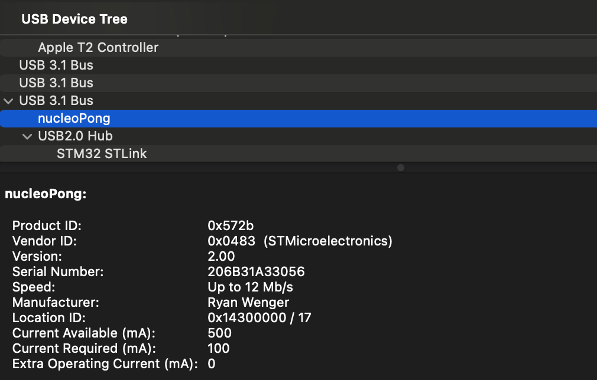

Home Weekly Progress Reports Part List
After a LOT of work, I finally got the USB stack up and running, and the board now enumerates as an HID device when connected to my computer! It's highly satisfying using the nunchuk to control the mouse cursor on my laptop and iPad, but it's time to move on. Now that USB (and I2C) are ready, I've begun to lay out the basic code structure for the top-level application state machine which will handle program flow. I've also started bringup on the driver for the LCD display that will be used as the main UI. Once that is done, the next big goal to tackle is reverse-engineering the game physics of Cup Pong so the bot will be able to determine how much "force" (a.k.a mouse movement) is required to target a given cup.
Progress this week was very scattered. I implemented the SPI LCD driver, which means I'll be able to use that as a GUI once the rest of the application is ready. I also implemented ~80% of the top-level state machine, but decided to instead focus on reverse-engineering the physics of Cup Pong in order to make a reliable bot. However, I've run in to quite a bit of hurdles in the process of implementing the bot. The first was the fact that the iPad uses mouse acceleration when calculating cursor movement from an input device. As such, getting the iOS cursor settings into a state where mouse movement can actually be reliably tracked by the nucleo took a lot of tweaking, but it's been accomplished. Additionally, the timing of sending USB packets to and from the device appears to be imprecise—certain report sequences that sometimes successfully land the ball in a cup also sometimes grossly over or undershoot that cup—I still have not found a way to mitigate this. Hopefully by next week the bot's gameplay will be at 100%, because right now, even after extensive testing, tweaking, and even decompilation of the GamePigeon binary on my part, only around 60% of the shots are successful. And this, obviously, drastically reduces both the usefulness and appeal of nucleoPong.